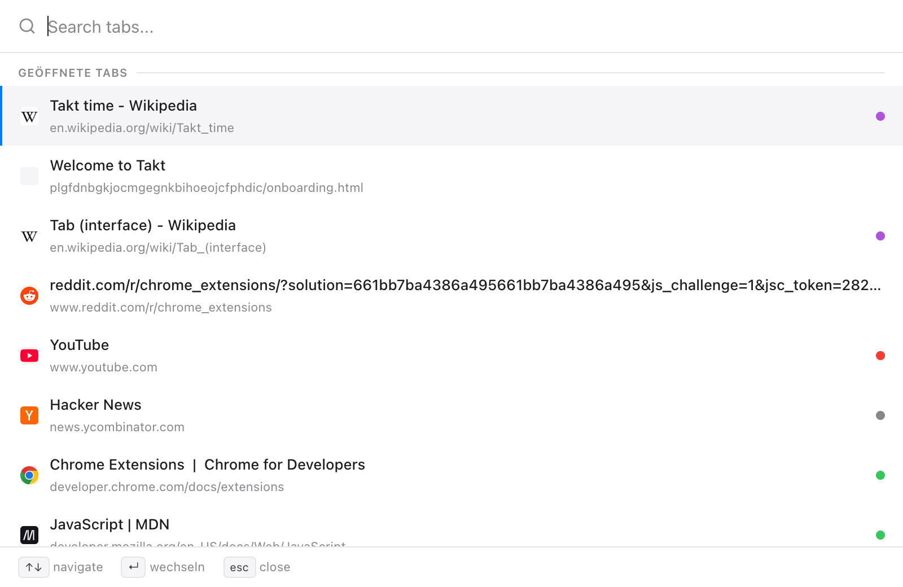
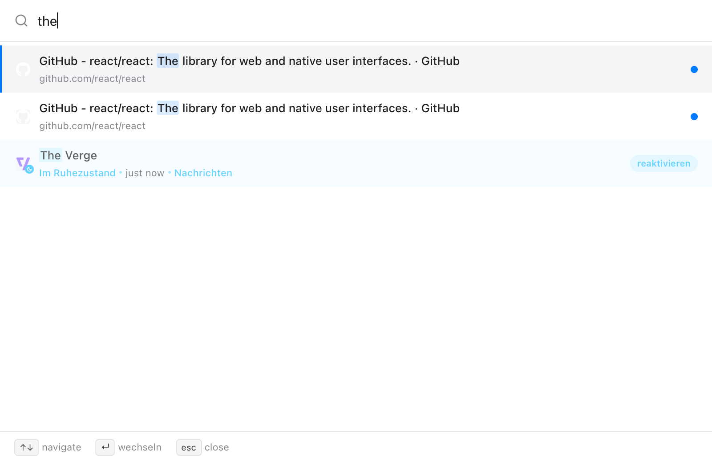
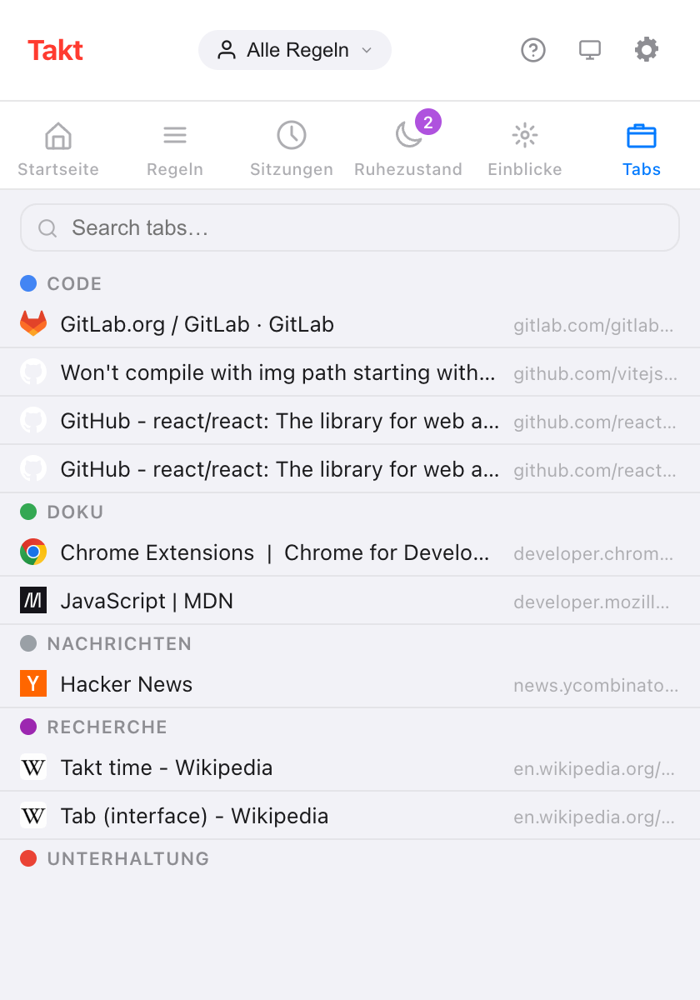

Kurz gesagt: Alt+Shift+Space öffnet ein Suchfeld über der Seite. Tippen, mit den Pfeiltasten wählen, Enter drücken.
- Durchsucht offene Tabs, hibernierte Tabs und, wenn Sie die Berechtigung erteilen, den Browserverlauf.
- Funktioniert auch auf
chrome://-Seiten, in einem kleinen Fenster. - Quick Switch ist Premium ($3/Monat oder $30/Jahr). Das Suchfeld im Popup-Bereich Tabs ist kostenlos.
Warum dauert es so lange, einen Tab zu finden?
Ab etwa 20 Tabs zeigt Chromes Tab-Leiste kaum mehr als Favicons. Sie suchen nach Symbolen, klicken auf den falschen GitHub-Tab, versuchen es noch einmal.
Tippen geht schneller als Suchen mit den Augen. Sie erinnern sich an „den Pull Request zum Caching“, nicht daran, wo er in der Leiste sitzt.
Wie durchsuche ich meine offenen Tabs per Tastatur?
- Drücken Sie Alt+Shift+Space. Über der aktuellen Seite öffnet sich ein Suchfeld.
- Tippen Sie einen beliebigen Teil des Titels oder der URL. Groß- und Kleinschreibung spielen keine Rolle, und die Liste aktualisiert sich bei jedem Tastendruck.
- Bewegen Sie sich mit ↑ und ↓. Am Listenende springt die Auswahl wieder an den Anfang.
- Drücken Sie Enter, um hinzuspringen. Takt fokussiert den Tab und holt sein Fenster nach vorn.
Zwei weitere Tasten: Tab übernimmt den Titel des gewählten Ergebnisses ins Suchfeld, und Esc schließt es. Das Feld schließt sich auch, wenn Sie daneben klicken oder das Fenster wechseln.

Was durchsucht Quick Switch?
| Quelle | Wann sie erscheint | Enter bewirkt |
|---|---|---|
| Offene Tabs | Immer; zuletzt genutzte zuerst, aktueller Tab zuletzt | Wechselt zum Tab |
| Hibernierte Tabs | Immer, bis zu 50 | Weckt den Tab dort auf, wo er war |
| Verlauf | Sobald Sie tippen, mit Berechtigung für den Verlauf; bis zu 20 | Öffnet die Seite in einem neuen Tab |
Die Reihenfolge ist fest: offene Tabs, dann hibernierte Tabs, dann der Verlauf. Der Verlauf lässt Seiten aus, die bereits offen oder hiberniert sind, und listet nie chrome://- oder Erweiterungsseiten auf.

Diese letzte Zeile ist der Grund, warum Suche und Hibernierung in derselben Erweiterung stecken. Sie können Tabs schließen, ohne Angst, sie zu verlieren, denn ihr Name genügt, um sie zurückzuholen.
Funktioniert es auf chrome://-Seiten?
Ja. Erweiterungen dürfen nicht auf Chromes eigenen Seiten zeichnen, deshalb öffnet sich Quick Switch dort als Fenster mit 560 × 480 Pixeln. Das gilt für chrome://-, chrome-extension://-, about:- und chrome-untrusted://-Seiten sowie den Chrome Web Store. Die Tasten sind dieselben.
Gibt es eine kostenlose Möglichkeit, Tabs zu durchsuchen?
Ja: den Bereich Tabs im Takt-Popup. Er listet jeden offenen Tab unter seiner Tab-Gruppe auf, ungruppierte Tabs in einem eigenen Abschnitt. Tippen Sie ins Suchfeld, um nach Titel oder URL zu filtern; Esc leert es. Klicken Sie auf eine Zeile, um den Tab zu fokussieren und sein Fenster nach vorn zu holen.

| Popup-Bereich Tabs | Quick Switch | |
|---|---|---|
| Plan | Free | Premium |
| So öffnen Sie es | Takt-Symbol anklicken, dann Tabs | Alt+Shift+Space |
| Offene Tabs | Ja, nach Gruppe | Ja, zuletzt genutzte zuerst |
| Hibernierte Tabs | Nein (sie haben einen eigenen Bereich) | Ja |
| Verlauf | Nein | Mit Berechtigung |
| Maus nötig | Zum Öffnen und Auswählen | Nein |
Kann ich die Tastenkombination ändern?
Ja. Öffnen Sie chrome://extensions/shortcuts, suchen Sie Takt, klicken Sie auf den Stift neben Quick-switch und drücken Sie die gewünschten Tasten.
Wird mein Verlauf irgendwohin gesendet?
Nein. Die Verlaufssuche ist aus, bis Sie unter Settings → Berechtigungen die optionale Berechtigung Browserverlauf-Zugriff erteilen. Die Suche läuft innerhalb von Chrome, und Sie können die Berechtigung auf derselben Seite widerrufen. Ohne sie durchsucht Quick Switch weiterhin offene und hibernierte Tabs.
Was Quick Switch nicht kann
Es findet genau die Buchstabenfolge, die Sie tippen, irgendwo in Titel oder URL. Eine unscharfe Suche gibt es nicht, „gthub“ findet also nichts. Wer im kostenlosen Plan die Tastenkombination drückt, bekommt keine Reaktion; nutzen Sie stattdessen den Bereich Tabs.
Schluss mit der Suche zwischen Favicons. Tippen Sie den Namen des Tabs.
Zu Chrome hinzufügenHäufige Fragen
Mit welcher Tastenkombination durchsuche ich offene Tabs in Takt?
Alt+Shift+Space öffnet Quick Switch. Ändern können Sie sie unter chrome://extensions/shortcuts.
Funktioniert Quick Switch auf chrome://-Seiten?
Ja. Auf Seiten, auf denen Erweiterungen nicht laufen dürfen, öffnet es sich in einem Fenster mit 560 × 480 Pixeln statt über der Seite.
Gibt es eine kostenlose Möglichkeit, Tabs in Takt zu durchsuchen?
Ja. Der Bereich Tabs im Popup listet offene Tabs nach Gruppe auf und hat ein Suchfeld. Quick Switch ist Premium, für $3/Monat oder $30/Jahr.
Durchsucht Quick Switch meinen Browserverlauf?
Nur mit der optionalen Berechtigung für den Verlauf. Verlaufsergebnisse erscheinen, sobald Sie tippen, bis zu 20, und die Suche läuft innerhalb von Chrome.